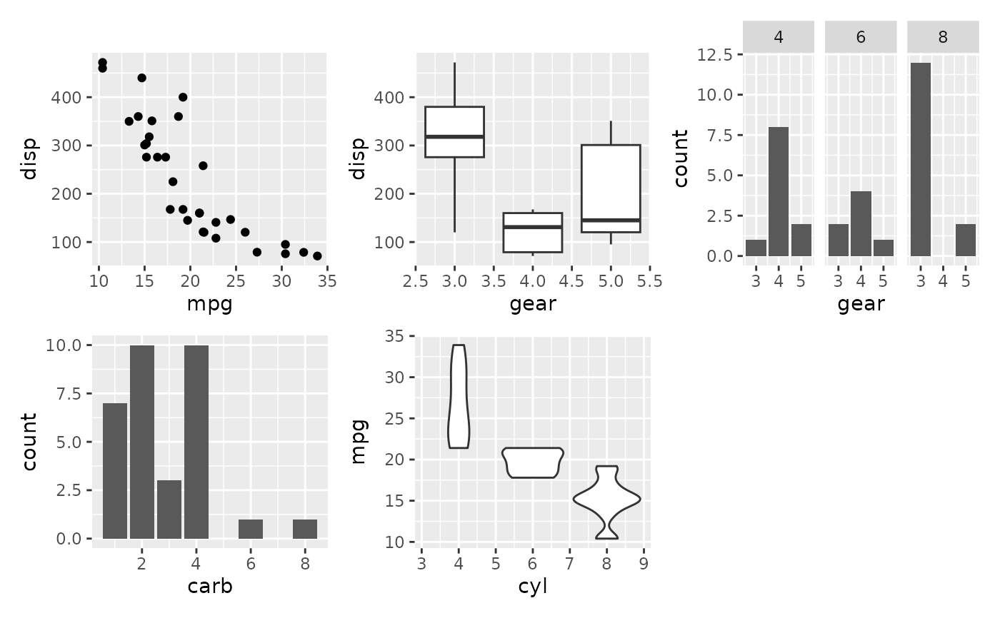
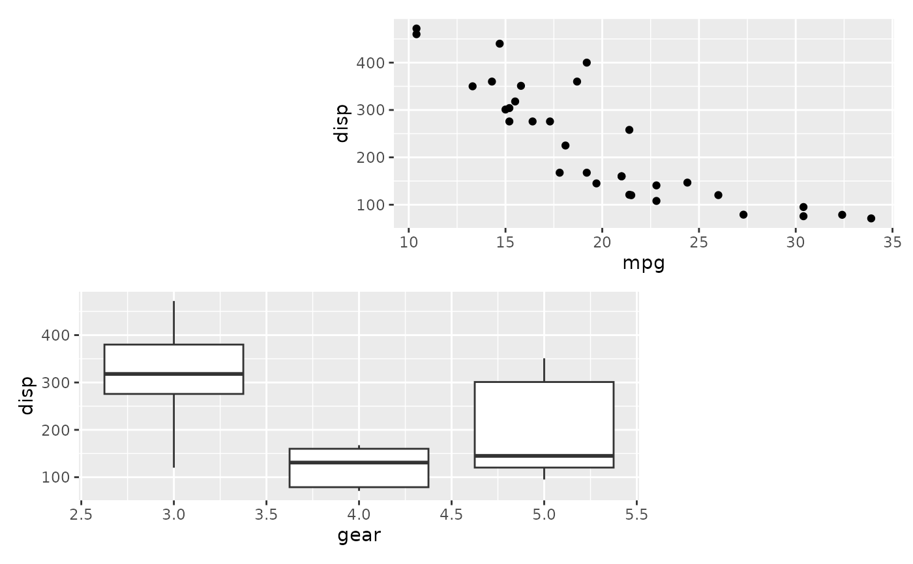
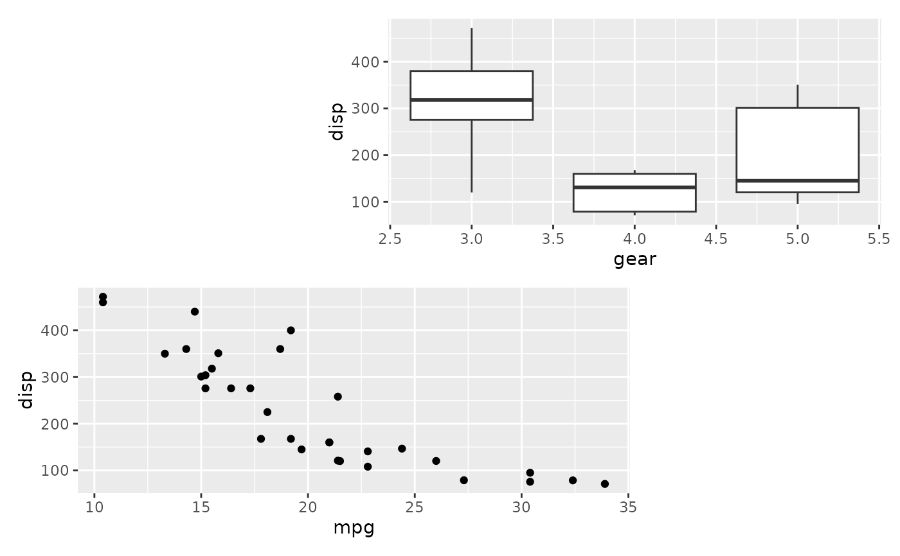
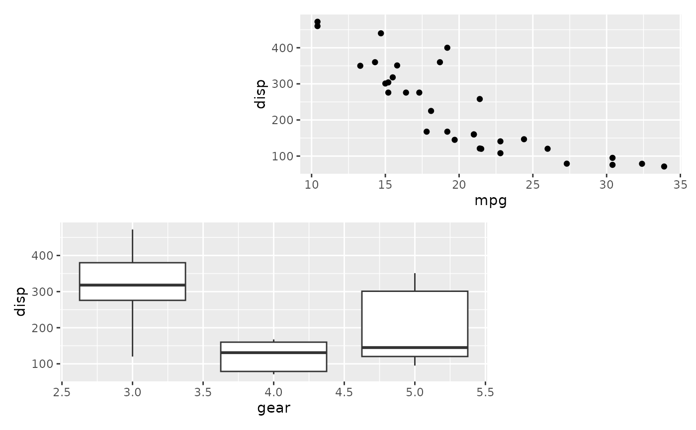
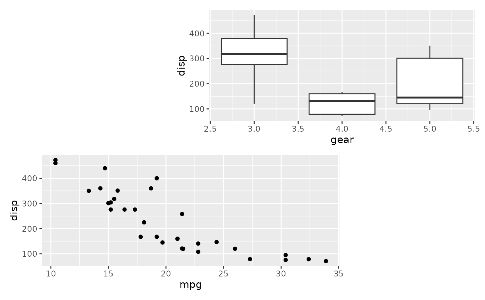

An internal S7 class that represents a collection of aligned plots along with their layout configuration, titles, tags, and theme.
Usage
alignpatches(
...,
ncol = NULL,
nrow = NULL,
byrow = TRUE,
widths = NA,
heights = NA,
area = NULL,
guides = waiver(),
theme = NULL,
design = NULL
)
align_plots(
...,
ncol = NULL,
nrow = NULL,
byrow = TRUE,
widths = NA,
heights = NA,
area = NULL,
guides = waiver(),
theme = NULL,
design = NULL
)Arguments
- ...
<dyn-dots> A list of plots, ususally the ggplot object. Use
NULLto indicate an empty spacer. Each input must implement thepatch()method.- ncol, nrow
The number of columns and rows in the grid. Defaults to
NULL. If both areNULL, the layout dimensions are determined automatically using the same logic asfacet_wrap().- byrow
A logical value indicating whether plots should be filled in row-major order (
TRUE) or column-major order (FALSE). Defaults toTRUE.- widths, heights
The relative widths and heights of each column and row in the grid. These values are recycled to match the grid dimensions. The special value
NAis treated as a unit of1null, unless a fixed-aspect plot is included — in that case, the affected dimension will expand or contract to maintain the aspect ratio of the plot. Defaults toNA.- area
A specification of the area layout. Can be defined either as a character string or as a combination of calls to
area(). Defaults toNULL.- guides
A string with one or more of
"t","l","b","r", and"i"indicating which side of guide legends should be collected. Defaults towaiver(), which inherits from the parent layout. If there is no parent layout, or ifNULLis provided, no guides will be collected.- theme
A
theme()object used to customize various elements of the layout. By default, the theme will inherit from the parentlayout.- design
An alias for
area, retained for backward compatibility.
Properties
plots: A list of plot objects.
layout: A list specifying layout options, including:
ncol,nrow,byrow: grid layout parameters.widths,heights: relative dimensions of rows/columns.area: custom area specification.guides: guide handling.
titles: A list specifying title options (
title,subtitle,caption).tags: A list specifying tag options (
tags,sep,prefix,suffix).theme: A theme configuration object.
Examples
# directly copied from patchwork
p1 <- ggplot(mtcars) +
geom_point(aes(mpg, disp))
p2 <- ggplot(mtcars) +
geom_boxplot(aes(gear, disp, group = gear))
p3 <- ggplot(mtcars) +
geom_bar(aes(gear)) +
facet_wrap(~cyl)
p4 <- ggplot(mtcars) +
geom_bar(aes(carb))
p5 <- ggplot(mtcars) +
geom_violin(aes(cyl, mpg, group = cyl))
# Either add the plots as single arguments
align_plots(p1, p2, p3, p4, p5)

# Or use bang-bang-bang to add a list
align_plots(!!!list(p1, p2, p3), p4, p5)
 # Match plots to areas by name
area <- "#BB
AA#"
align_plots(B = p1, A = p2, area = area)

# Compare to not using named plot arguments
align_plots(p1, p2, area = area)

# Match plots to areas by name
area <- "#BB
AA#"
align_plots(B = p1, A = p2, area = area)

# Compare to not using named plot arguments
align_plots(p1, p2, area = area)
